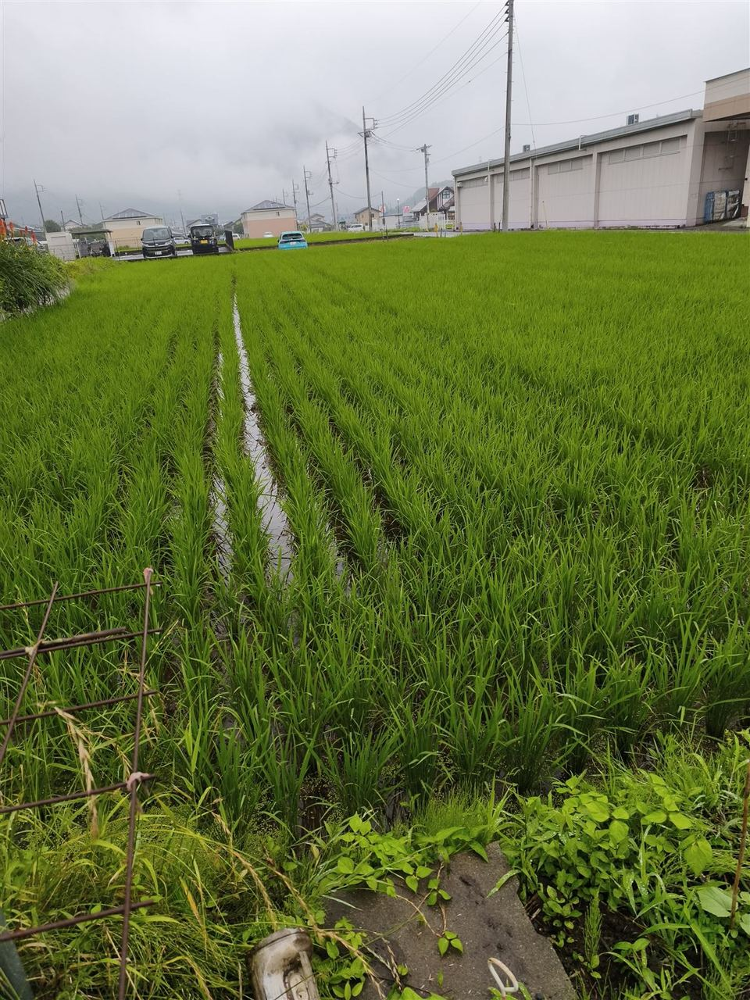
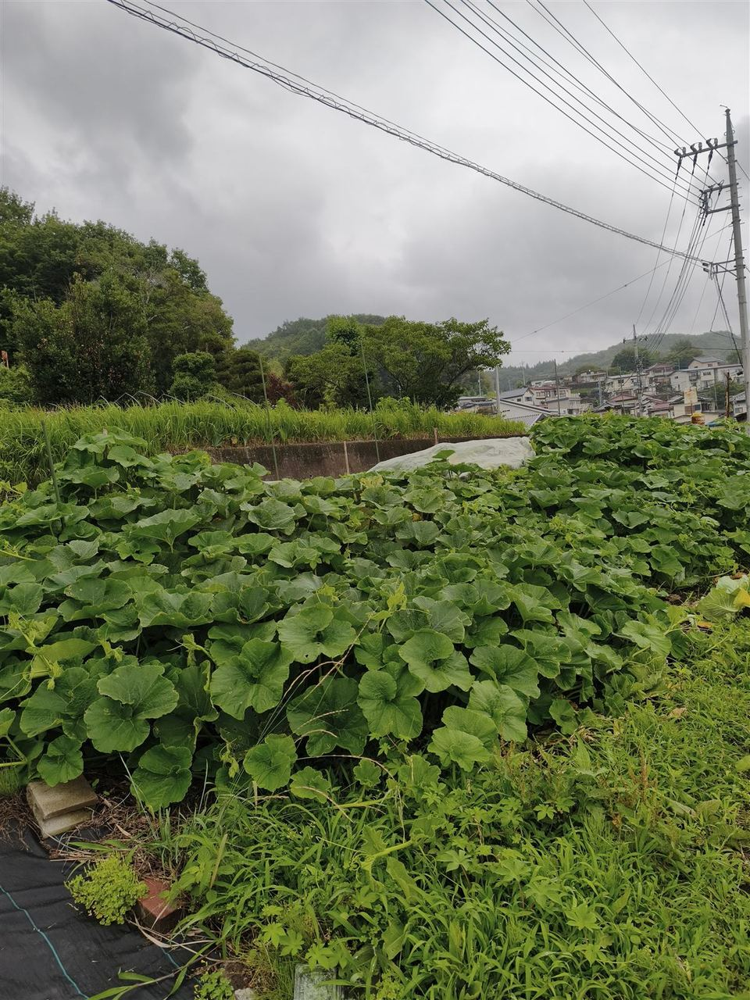
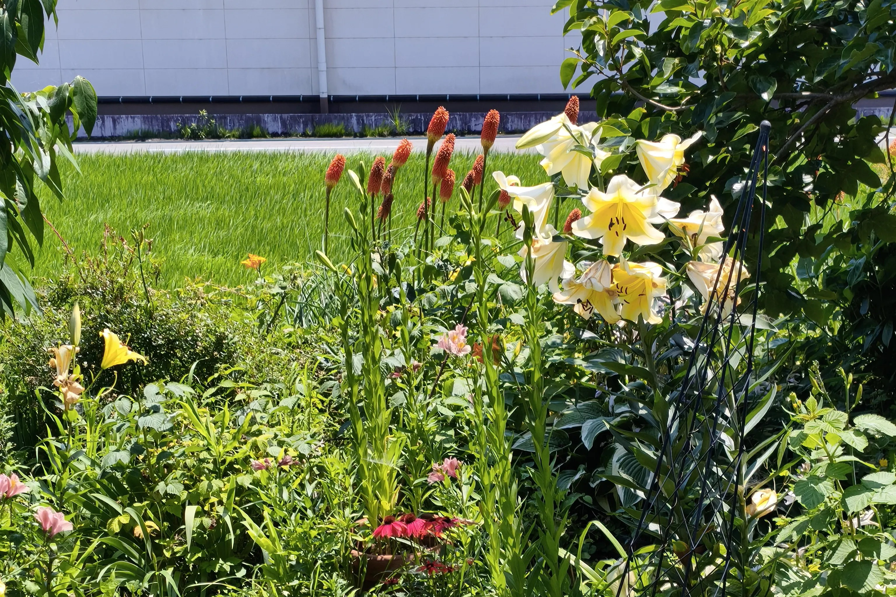

Season is almost over !
Cabbage
Completely undisinfected cabbage grown in our fields. Currently sold to friends, acquaintances, and neighbors.
Sato Farm — 15-6 Ise-machi, Nakanojo-machi, Agatsuma-gun, Gunma-ken
Protecting Japan's small-scale farming and rice cultivation
A small, family-run farm dedicated to Koshihikari rice, seasonal vegetables, and fresh fruits.
Bringing you safe, delicious produce, grown with honesty and care.
Our web address is changing. Scan the QR code below.
New URL
Scan with your phone to visit our new site
* The background landscape is an AI-generated image.
Japanese version available: 日本語で読む
Current notices
Sales are for friends, acquaintances, and neighbors only.
Our new web address: https://satofarms.com
satofarms.com works just as well.
Sato Farms = satofarms.com
News
The Two-Month Miracle: A Cabbage Story You Won’t Believe—see Random Thoughts.
A .com Is My Flag---satofarms.com—see Random Thoughts.
Morning in the Rice Fields Woven by Light, Wind, and Water
Added a photo of red hot pokers and lilies to Farm Report.
Pausing My Update Work — I Lost the Stare‑Down with the Code!
A Rice Field Behind in Tillering — Choosing Not to Drain the Water
Published my first landing page—see Random Thoughts.
How My Website Launch Sparked a LINE Friend "Purge"—see Random Thoughts.
Lost in the maze of mobile display—see Random Thoughts.
＊A Note on How This Site Is Run ＊Beloved rabbit Lemon's memorial day—see Random Thoughts. Paid service starts today.
Potatoes and taros at my family home were destroyed by wild boars—details in Farm Updates.
Launched the Sato Farm website—as noted in Random Thoughts, we will keep revising and adding.
Posted two photos of rice paddies and pumpkins—see Farm Updates.
Completely undisinfected cabbage—¥100 per head—see Products.
Rice Paddies and Fields of the Agatsuma Region
This landscape is an image generated by generative AI.
About Nakanojo
Located in northwestern Gunma's Agatsuma region, Nakanojo is a town blessed with pristine nature and famous hot springs like Shima Onsen and Sawatari Onsen. Pure subterranean water from the Shima and Nakuta Rivers, significant day-and-night temperature swings, and lush forests create the perfect terroir that nurtures the rich flavor of Sato Farm's rice and vegetables.
About
Sato Farm is a small, family-run farm nestled in Nakanojo, Gunma Prefecture. We grow premium Koshihikari rice, seasonal vegetables, and fruits like plums and persimmons. Our approach to farming is rooted in sincerity and care—values shaped by my rewarding years of experience in both education and healthcare.
We are committed to delivering safe, delicious produce by paying close attention to every step, from soil preparation to harvest.
Products
Rice fields, vegetable plots, and fruit trees. Sales to friends, acquaintances, and neighbors. Current offerings and rice achievements.
Season is almost over !
Completely undisinfected cabbage grown in our fields. Currently sold to friends, acquaintances, and neighbors.
Rice fields — cultivation
Reiwa 5 (2023) results: Koshihikari
1) First Grade, Taste Score 90
2) "Hanayukari" certified.
Stock & sales — inquire
Fruit trees — cultivation
Fruit trees: Persimmons, plums
Dried persimmons, pickled plums (umeboshi)
Also drying sweet potatoes into hoshi-imo.
Stock & sales — inquire
Our message
At Sato Farm, in our small paddies and fields in Nakanojo Town, we work on Koshihikari rice cultivation and vegetable growing.
Reiwa 5 (2023) — First Grade Koshihikari,
Taste Score 90, "Hanayukari" certified.
On the other hand, in recent years we have been struggling with weeds, and there are days when we feel discouraged.
We hope to share, even a little, the everyday joys and struggles of small-scale part-time farmers.
documents/hanayukari.pdf (Click to open the PDF in a small window. This page stays open.)
Farm Report
Photos and short notes from our fields and paddies, updated from time to time.



"Well, at least no bears showed up, so I guess I should count my blessings" — that's what the old-timer nearby said. I visited my family home in Ōkuwa for the first time in a week. In the back field, I'd planted potatoes and taros. This spring I'd already spotted three wild boar piglets, and the area nearby had already been dug up, so I'd been on edge wondering when my potatoes would get hit. A week ago everything was fine, but when I checked today, it was all wiped out, root and all — not a single potato left, the whole field left in ruins.
The old-timer's field is fully enclosed with corrugated tin sheeting and lined with three rows of electric wire, keeping both the wild boars and the raccoon dogs at bay, he told me. When I mentioned that my defenseless potatoes had been wiped out, his reply felt less like sympathy and more like a scolding. Fair enough — completely unguarded. A total defeat. If I'm going to set up tin sheeting and electric wire for next year, it'll probably run me tens of thousands of yen. July 7, 2026
Profile
Setsuo Sato, Representative — Sato Farm
A small farm in Nakanojo-machi, Agatsuma-gun, Gunma—growing Koshihikari rice, vegetables, and fruit trees.
I bring the integrity cultivated in education and healthcare to my daily work in the fields.
Fifty years of skiing history----Currently updating my personal best run.
In other words, that just goes to show how terrible I've been all these years...
During the winter, I work as a full-time ski instructor, sharing the joy of skiing with international visitors. Drawing on my background in education, I provide clear, encouraging lessons for beginners through intermediate skiers.
Notes
FAQ
Sales are for friends, acquaintances, and neighbors. If you have a connection, please call our landline to inquire.
We grow Koshihikari. Reiwa 5 results: First Grade, Taste Score 90, "Hanayukari" certified. Stock and pricing vary by season.
Cabbage at ¥100 is currently available. Rice availability varies — please call to inquire.
Please call 0279-75-2711, mobile 080-1256-8883, or email 2324satou.setuo@gmail.com (Representative: Setsuo Sato).
"Sato Farm" is the name Setsuo Sato uses as an individual farmer. It is not a name registered as a corporation or trade name.
Access
15-6 Ise-machi, Nakanojo-machi, Agatsuma-gun, Gunma-ken
Guide links open in a small popup. On smartphones, links may not open as a popup. Please use the back button.
Guide QR Codes
Map
Scan to open Google Maps

Website
Scan to open this site
Links
Hot springs, nature, and culture in Nakanojo Town. Links open in a small popup.
Sightseeing links in Agatsuma County (five towns and villages, excluding Nakanojo). Links open in a small popup.
Contact
For orders or questions, please call, email, or use the form below. Sales are for friends, acquaintances, and neighbors.
Please fill in and submit.